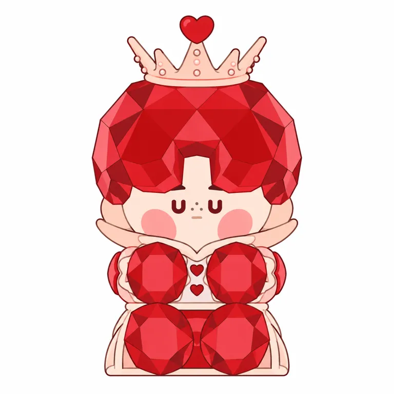

内核
阳光、单纯、时尚与一点倔强；陪伴是作者希望，不是本轮已验证用户结果
POP MART / STANDARD STUDY / 2026.10.28
软糖的明亮， 和一个男孩的陪伴。
Yumi
从作者原点，到角色与产品机制。
5组官方视觉 · 5项代表商品 · 9项来源
小红书按用户要求暂跳过 / 用户需求保留待验证
本轮为部分研究，已核与未知分别记录

从材料观感出发形成性格， 把甜、时尚与陪伴分开验证，不靠形容词证明购买。
角色设定、创作者自述与研究归纳分开。
从软糖的色彩与透亮观感出发，把爱打扮的男孩做成糖果世界偶像；鼻梁雀斑有作者解释。材料表情与系列主题相连，但透明外观、真实触感和用户陪伴体验要分别验证。
把日子过得甜一点，也陪你去更远的地方。
本句为研究归纳（inferred），不是官方广告语或全体用户的心声。
阳光、单纯、爱打扮。从糖果世界走向舞台与旅行日常。
创作、首次公开、签约与首品，不合并成一个诞生日。
Yumi把喜爱的晶透软糖与男孩形象结合；官方简介列动画学习背景。本轮可核最早商品记录为2023-06-02 Smoothies Party，但不是已证实角色诞生或首品。二手索引2021说法尚未回溯同期原始档案。 [BIO] [INT1] [INT2] [SKU05]
| 时间 | 核实的事件 | 证据 |
|---|---|---|
| 2023-06-02 | Smoothies Party美国商品页记录；非证实首品 | self_report [SKU05] |
| 2024-03-08 | Former Friend单体采用棉/金属/PVC/ABS混合材料 | self_report [SKU04] |
| 2024-09-06 | Star Project偶像主题手办记录 | self_report [SKU03] |
| 2025-01-03 | Hard & Shiny商品页记录，含电子元件及PET | self_report [SKU02] |
| 2025-07-10 | Sweet Like Me美国商品页记录，与二手索引日期分开 | self_report [SKU01] |
| 2025-10-07/08 | Yumi直接访谈说明软糖原点、打扮与陪伴意图 | self_report [INT1] [INT2] |
世界观与作者意图不能直接替代用户感受。
Yumi把晶透软糖和男孩结合，并解释鼻梁雀斑是角色自己画的装扮。这让一个普通的五官细节连接到爱时尚的性格；知道这个设定的人占多少，本轮没有用户数据。 [INT1]
作者把鲜艳和晶透分别联系阳光与单纯，也自述带角色旅行、吃饭拍照。它把陪伴具体到可想象的行为，但这些是创作意图与作者实践；不能直接声称用户普遍寂寞、都把它当伴侣。 [INT2]
阳光、单纯、时尚与一点倔强；陪伴是作者希望，不是本轮已验证用户结果
糖果、宝石、透明、雀斑和偶像舞台为公共语言，具体脸部/身体组合形成角色身份
先下载并实际看图；不以生成图补作官方证据。


官方原作品通过原站图链引用；图链失效时可打开出处。当前主图不自动等于最早角色原稿。所有图像观察仅针对已看样本，无用户识别率或官方技术图结论。
固定什么、变化什么；判断均保留样本范围。
| 维度 | 本轮观察 |
|---|---|
| 原型／轮廓 | 类人 / 大头小身 / 单角色 |
| 标记位置与记忆点 | 头型、五官：厚块糖果发、宽脸、鼻梁雀斑、大腮红与短小四肢；样本眼形可变 |
| 五官 | V01红宝石发中央缺口、U形小眼、鼻梁三点、粉红大腮红、小横嘴；其他样本圆眼/配饰遮眼，不能统一成一套眼形 |
| 反常点与情绪 | 食物观感包住爱打扮的男孩；硬切面与软糖概念共存，形状/材料不等于可捏 / 反差 |
| 密度与名称 | 中等 / 其他 |
糖果发、胖脸、腮红雀斑和短四肢，让材料和轮廓共同参与识别
记录渲染，不冒充生产色卡。
甜品、舞台与宝石主题换用红、粉、绿、橙等鲜亮色
饱和糖果色与半透明/亮面观感是候选材料语言，不是全IP固定一种颜色
六区真实取样来自V01红宝石款，切面与反射导致同一对象色差，不用来推完整透光/折射参数。
本地V01转RGBA；左上为坐标原点，每个中心9×9逐通道中位数。阴影、高光、压缩与显示均会影响色值；未测面积配比，也没有校色或实物色差验证。
价格、地区、材料、尺寸与发售日期分别记录。
| 商品 | 当日地区标价／发售记录 | 规格／材料／边界 |
|---|---|---|
| Sweet Like Me 手办 [SKU01] [COL] | USD 19.99 US / 2025-07-10 | 7–9cm PVC／ABS／五金 美国站记录；不将二手2024目录当本页日期或全球首发。 |
| Hard & Shiny 手办 [SKU02] [COL] | USD 19.99 US / 2025-01-03 | 7–9cm PVC／ABS／五金／电子元件／PET 宝石外观非真实宝石；电子元件用途未逐款核实。 |
| Star Project 手办 [SKU03] [COL] | USD 16.99 US / 2024-09-06 | 4.9–9.3cm PVC／ABS 偶像设定/装束不证明真实音乐发行或明星带货。 |
| Former Friend 单体 [SKU04] [COL] | USD 99.99 US / 2024-03-08 | 5.12英寸 棉／金属／PVC／ABS 含棉不等同整件毛绒；附属推车与角色部件按图记录，未做拆件。 |
| Smoothies Party 单体 [SKU05] [COL] | USD 84.99 US / 2023-06-02 | 5.6英寸 ABS／PVC 饮品场景不代表真实食物材料；不是已确认首品。 |
软糖是一种创作意象，五项规格实际以PVC/ABS为主。透明感不证明可捏，也不能凭反光确认树脂、软硬度和制造参数；Hard & Shiny还出现PET与电子元件，必须按款另查功能。 [SKU01] [SKU02] [SKU05]
公司、IP、系列、年度与半年度分别看。
本轮只有正式商品、规格与标价，没有独立IP财务或销量。商品目录五项只是当前美国站可见范围；其他地区或历年系列可能更多，不能拿目录少推断衰退，也不拿持续上新推断增长。 [COL]
财报按IP归类收入不等于作者收入、授权费、零售GMV或二手市场规模。材料百分比不等于成本配比；未披露团队、毛利和库存不作估算。
本批遵照用户要求先跳过小红书；不编造评论与人群比例。
| 维度 | 证据与假设 |
|---|---|
| 人群入口 | 糖果审美、色彩收藏、随行拍照与偶像主题是候选入口；真实分布未知 |
| 接触地点 | 官方商品渠道及艺术家活动/直接采访；按用户指示跳过小红书 |
| 购买证据 | 五项商品存在已核；没有单IP财务、个人购买和复购记录 |
| 识别线索 | 鼻梁三点雀斑、糖果头发、Star Project与Hard & Shiny是线索 |
| 分享行为 | 作者自述旅行带娃拍照，不转写为全体用户行为 |
| 破圈 | 甜品饮品与舞台主题可提供接触语境；实际获客与转化未知 |
鲜亮色与晶透糖果可能吸引第一眼（假设）
自己画的雀斑、偶像成长及不同材料版本可形成知识；没有持有人长期行为
有官方产品规格与价格；没有单IP收入、订单、粉丝增长或复购证据，不以作者愿景替代。
今天的审美不能直接反推早期成功。
甜品店、旅行打卡、桌面与偶像舞台的想象；视觉上甜美柔软，人物又有自己的时尚与倔强
陪我把生活里小小的快乐留下来。
阳光甜感与男孩时尚的结合；治愈是审美定位，非疗效。
与低饱和内收角色可作材料与情绪对照；未证明当时甜感男孩稀缺或其销量贡献。
糖果色与透亮材质提供鲜明第一眼入口；偶像主题把时尚性格显性化。材料吸引、人格认同与渠道供给可能同时起作用，本轮没有对照实验把贡献拆开。 [INT1] [INT2] [SKU03]
候选机制不冒充因果证明。
| 候选机制 | 局部支持 | 边界与替代解释 |
|---|---|---|
| 材料观感与人物性格可围绕同一个原点组织 inference | 作者把鲜艳和晶透分别联系阳光与单纯；宝石切面、软糖和饮品视觉存在。 [INT2] [SKU01] [SKU02] [SKU05] | 属于作者意图和视觉一致性，不证明用户这样理解，也没有透光/触感物理测试。 |
| 小雀斑把普通幼态脸连接到爱打扮的性格 inference | 作者解释鼻梁雀斑是角色画上去的；三点在当前主图可见。 [INT1] [SKU02] [SKU03] | 角色设定不是所有款必有或消费者已知的证据，眼形与饰品仍会变化。 |
| 陪伴可用旅行和美食拍照具体化，而非只写抽象治愈 hypothesis | Yumi自述带角色旅行吃饭拍照，并希望它陪用户到不同城市。 [INT1] [INT2] | 作者行为与愿望不是用户访谈；本轮没有真实携带频次或购买动机证据。 |
| 从甜品到偶像再到宝石，主题变化需要保留身份关系 inference | 五项官方商品变色、换装与材质组合，但宽脸、块状发和短身体重复。 [SKU01] [SKU02] [SKU03] [SKU04] [SKU05] | 没有匿名识别、各系列销量对照；不能据上新认定增长或忠诚。 |
测试输入、依赖与观察完整保留。
红切面发中央额口、桃色心冠、三点雀斑、双大腮红、上翻领、四团红手脚与蹲坐比例接近。U眼由空心边变粗实心、部分切面/冠点简化；透明反射转为色块，没有宣称保留真实折射或纯文字可复现。
研究重建词，不是创作者原词。参考图SHA256与真实输出路径见测试档案。
Use the attached official product photograph as the sole identity, visible geometry, costume, expression and pose reference. Translate the exact single front-facing small seated candy boy into a clean flat 2D full-body character study on a white square canvas. Preserve the large faceted ruby-red bob-shaped hair mass with a deep central rectangular forehead opening and two thick lower side locks, the pale peach broad round face, two small burgundy U-shaped eyes with separate short brow marks partly hidden by the hair, three tiny gray-brown freckles between the eyes, a faint tiny horizontal mouth, and two large rosy cheek ovals. Preserve the pale peach five-point open crown with tiny pearl dots along its pointed stems and a small red heart on the tallest central point. Preserve the wide upturned pale peach collar, two ruby-red heart buttons down the pale chest, two large red faceted rounded mitten shapes held in front of the chest, and two large red faceted rounded feet resting together below them. Preserve the small pale peach cape-edge frame running around the sides and low flat bottom. Maintain the exact squat seated silhouette, crown-to-hair-to-face ratios, central symmetry and quiet facial expression. Represent the crystal-like hair, hands and feet using clear outlined polygon color regions in a small set of red and pink local colors; these flat facets must describe the same shapes without photorealistic reflections, transparent rendering, dimensional gradients, specular shine, shadows or plastic texture. Use thin clean dark outlines. Do not replace the U eyes with round anime eyes, remove the freckles, add a smile, turn the crown into a hat, add legs or arms outside the silhouette, or introduce extra props. No lettering, no logos, no watermark. Reconstruct only the visible view, without invented rear details.下载原词 ↓
无数值相似度、多人盲测或重复稳定性结论。未经测试的原创黑白、平面、实物六条词不进入可执行正式区；研究复现不等于原创身份开发。
沿用既有study v0.3，不升级skill。
可借由颜色/材料观感出发建立性格的路径，先说明具体情境；不直接把甜=治愈当结论。
可借材料原点如何约束轮廓和主题变化；重新设计脸、发块、身体，不复制糖果发加三点雀斑与大腮红组合。
透明、切面、亮面要分别验证模具、透光、色差和耐用；平面色块只能转译观感，不能证明量产工艺或可捏触感。
截止2026-10-28（北京时间）；访问程度与结论边界逐项列出。
POP MART美国站 · 发布：未知 · 访问：full
当前正文西班牙语，描述糖果世界擅歌舞的时尚明星；五项美国标价非销量。
POP MART · 发布：未知 · 访问：partial
已读Yumi段落：动画学习、喜爱卡通与糖果；不作为完整传记或原始授权合同。
Harper’s Bazaar Singapore／直接访谈 · 发布：2025-10-07 · 访问：full
作者谈创作与希望；文章注明与Marina Bay Sands合作，不当用户调查或独立销量证据。
NUYOU／直接访谈 · 发布：2025-10-08 · 访问：full
作者阳光/单纯、晶透与旅行陪伴自述；同一SPH/Marina Bay Sands活动背景，不伪装两次独立用户验证。
POP MART美国站 · 发布：未知 · 访问：full
美国站记录；不将二手2024目录当本页日期或全球首发。 发售记录为该地区页面日期；当日标价不是实际销量。
POP MART美国站 · 发布：未知 · 访问：full
宝石外观非真实宝石；电子元件用途未逐款核实。 发售记录为该地区页面日期；当日标价不是实际销量。
POP MART美国站 · 发布：未知 · 访问：full
偶像设定/装束不证明真实音乐发行或明星带货。 发售记录为该地区页面日期；当日标价不是实际销量。
POP MART美国站 · 发布：未知 · 访问：full
含棉不等同整件毛绒；附属推车与角色部件按图记录，未做拆件。 发售记录为该地区页面日期；当日标价不是实际销量。
POP MART美国站 · 发布：未知 · 访问：full
饮品场景不代表真实食物材料；不是已确认首品。 发售记录为该地区页面日期；当日标价不是实际销量。